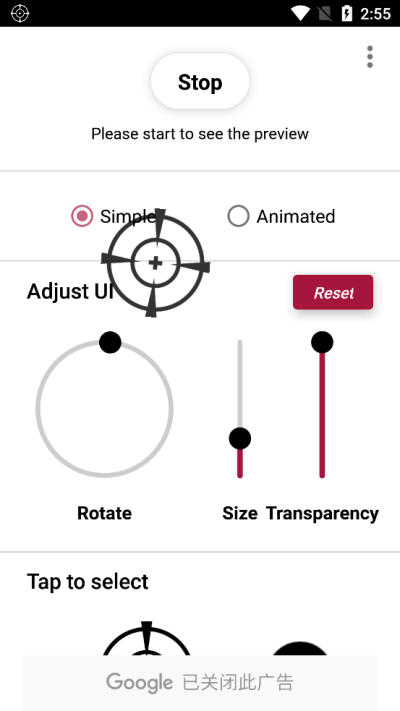
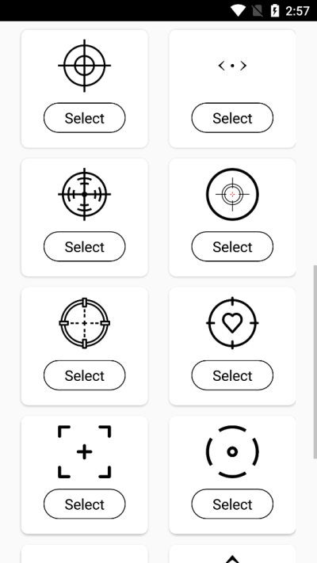
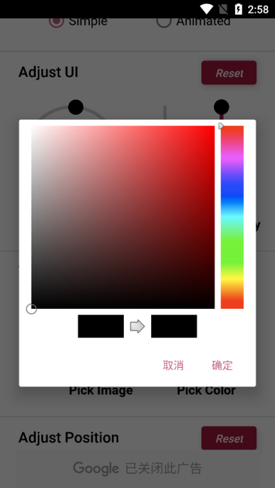

Crosshair 准星工具上手：装完就能打的实战调参指南
Crosshair 是安卓平台的悬浮准星工具，射击游戏玩家用来辅助瞄准。这篇教程从安装授权到调准位置、选样式、调大小颜色，一步步带你把准星调到顺手。
这篇教程能帮你做什么
读完这篇，你能把 Crosshair 准星装到手机上、授权好、调出一套适合你常用射击游戏的准星样式。从第一次安装到调完开打，全程不超过十分钟。
准备工作
动手之前确认两件事：
- 手机系统版本在安卓 8.1 以上，Crosshair 对旧系统不兼容；
- 安装包从Crosshair下载拿就行，它的官网上有入口，别乱找第三方改包。
第一步：安装与悬浮权限授权
安装和普通安卓 APP 一样，装完点图标打开。Crosshair 第一次启动会弹一个权限请求——"显示在其他应用上层"，这是它能在游戏里悬浮显示准星的核心权限，必须点允许，不然准星层调不出来。

有些手机系统的权限弹窗会被折叠到通知栏，或者直接不弹——这时候自己去设置里找。大部分机型路径是「设置 → 应用管理 → Crosshair → 显示在其他应用上层」，找到后开关打开即可。
授权完回到 Crosshair 主界面，你会看到准星层的实时预览已经显示在屏幕中间了，说明一切正常。
第二步：选一套准星样式
Crosshair 内置了完整的样式库，不用自己画。主界面点「样式库」进去，会看到一排排预设好的准星图案：有圆环带中心点的、有纯十字的、有点状小圆圈的，还有几种线宽和粗细的变体。
挑的原则很简单：先从细线条、中心点清晰的开始。粗线条的准星在远距离对枪时容易盖住目标轮廓，反而影响判断。如果拿不准，先随便点一个顺眼的应用上——反正换样式点两下的事，试错成本为零。

第三步：把准星调到屏幕正中
Crosshair 默认把准星放屏幕中心，但不同手机的屏幕裁切、虚拟按键位置可能导致视觉上的偏移——准星看着在正中，实际对上去就是差那么一点点。
进「调整外观」面板，找到 Adjust UI 区块的四向箭头：上下左右各一个，每次点一下推一格。调的时候眼睛盯着屏幕中心那一小块，多推的方向说明刚才过了，往回补几格就好。这个过程大概 30 秒就能搞定。

校完位置，准星的中心就和你手机屏幕的物理中心对齐了——这一步别跳过，位置偏个几像素，远距离狙击时就是差出一个身位。
第四步：调大小和颜色
准星能看见是基础，看得清、指得准才是进阶。两个参数决定这一点：Size 滑杆和颜色选择。
Size 滑杆在 Adjust UI 区块的中间，竖直排列的那根。圆点越往上准星越大，越往下越小。推荐从中间值起步，往上拨一档，进游戏对一张地图看一眼，再往下拨一档对比。两三轮你会发现自己有个舒服的取值范围。
场景不同取值逻辑也不一样：FPS 中远距离对枪选偏小，中心点精确优先；近战泼水或玩霰弹时选中档，看散布范围更直观；狙击开镜前用的参照准星选偏大，圆环框选才有意义。
颜色别凭喜好选，要看你常玩的地图主色。雪地图用深红或亮青，别用白；草地和丛林用品红或亮橙，别碰各种绿；沙漠地图亮青和荧光绿最稳，黄橙棕全要避开。一个实用技巧：把准星对准该地图最典型的两种背景（比如天空和地面）各停三秒，哪个颜色在哪块背景里一眼就能找到，就选哪个。
颜色调好后进训练场打一两梭子确认一下效果，想深入调参的话去Crosshair文档里翻。

新手最容易踩的三个坑
坑一：找不到悬浮权限在哪开
不同品牌手机把这个权限藏的地方不一样。通用搜索关键词就是「显示在其他应用上层」或者「悬浮窗」，在设置里直接搜这几个字能最快定位。如果搜不到，大概率是系统版本太老（低于安卓 8.1），Crosshair 用不了。
坑二：准星调得要么太粗要么太小
这不是审美问题，是定位精度问题。准星过大会盖住目标轮廓，中心点和实际命中点在视觉上产生偏移——远距离目标尤其明显；过小则在复杂背景里完全找不到准星在哪，特别是明暗交错的地图。记住中间值起步、进游戏对比、两三轮锁定。
坑三：换地图后准星颜色看不清
很多地图主色差异大——雪地图白色一片、草地全是绿色、沙漠黄橙一片。一套颜色通吃不现实，老玩家普遍备两套甚至三套，比如雪地图深红、草地图品红，换图前十秒在颜色选择器里切一下就行。
再往下能玩什么
玩熟了基础调参之后，可以试试不同游戏配不同准星——Crosshair 支持随时切换样式和外观参数，一个游戏一套准星，手感会明显上一个台阶。配置记下来之后，重装应用也不怕丢。